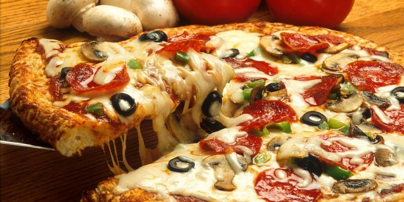

pizza

smaczniutka picka prosto z samej italii
Składniki
ciasto na pizze
ser
warzywa
sos pomidorowy
Przygotowanie
na ciasto wylej sos pomidorowy
posyp serem
dodaj warzywa
piecz 10min w piekarniku
powrót do strony głównej